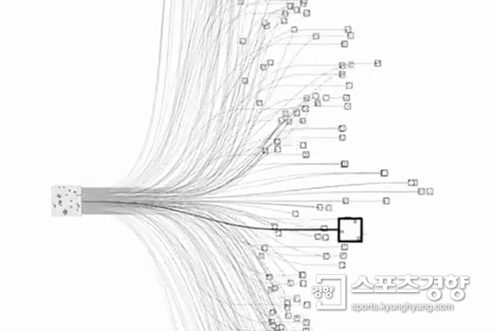

<DIV style="position:absolute; left:500; top:40;">
  <font size=7>데이터천재들은 어떻게 기획하고 분석할까?</font size></div>


        <DIV style="position:absolute; left:560; top:250;">
          <font size=6>
            인공지능이 발달하고 있는 현재에서 인공지능 또한
        </font size></div>
        <DIV style="position:absolute; left:560; top:300;">
          <font size=6>
              빅데이터 분석을 책임질 유력한 후보로 떠오르고 있다.
        </font size></div>
        <DIV style="position:absolute; left:560; top:350;">
          <font size=6>
              2016년 전 세계를 놀라게 했던 알파고의 사고과정이라
        </font size></div>
        <DIV style="position:absolute; left:560; top:400;">
          <font size=6>
            할 수 있는 신경망은 다음과 같았다.
        </font size></div>
<a href="https://sports.khan.co.kr/bizlife/sk_index.html?art_id=201603111347443&sec_id=561101"
        <DIV style="position:absolute; left:750; top:530;">
         
        </div></a>
        <DIV style="position:absolute; left:1200; top:800;">
          <font size=3>
        <- 관련 뉴스 확인가능
        </font size></div>


<a href="webpage.html"
 <DIV style="position:absolute; left:130; top:80;">
  </div></a>
   <a href="webpage2.html">
    <DIV style="position:absolute; left:100; top:330;color:#25D792">
     <font size=6>빅데이터의 구성요소</font size></div></a>
      <a href="webpage3.html">
       <DIV style="position:absolute; left:100; top:430;color:#25D792">
        <font size=6>데이터의 활용</font size></div></a>
          <a href="webpage4.html">
           <DIV style="position:absolute; left:100; top:530;color:#25D792">
            <font size=6>군집분석</font size></div></a>
              <a href="webpage5.html">
               <DIV style="position:absolute; left:100; top:630;color:#FF0000">
                <font size=6>인공지능</font size></div></a>
